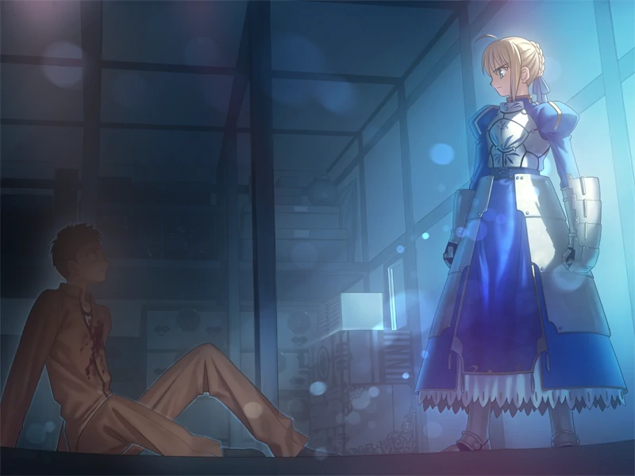

Fate/stay night é um fenómeno japonês que começou como uma visual novel (um tipo de videojogo) em 2004, desenvolvida pela TYPE-MOON, e que deu origem a uma extensa franquia mediática, incluindo anime, mangá e light novels.
A história centra-se na Guerra do Santo Graau, entre magos(mestres)que invocam sete Servos - Herois do passado - para lutar entre si.
Um dos servos - a primeira a ser apresentado no jogo - É Saber, a Serva do protagonista do jogo.

Cena inicial
"Eu lhe pergunto. Você é meu mestre?"
A visual novel se abre com Shirou - o protagonista - prestes a ser morto, mas sendo salvo no ultimo segundo por Saber, que lhe reconhece como seu Mestre
Em seguida, faz Lancer - Aquele que tentou assassinar Shirou - recuar, sendo ferida pelo seu Nobre Fantasma mas se curando rapidamente
Por ultimo, Saber ataca Rin e Archer - Ferindo o ultimo mortalmente - E sendo impedida de matar Rin por Shirou. Agradecida por ser salva, Rin leva Shirou e Saber a igreja, onde Kirei explica os básicos da guerra a Shirou.
Rotas
Fate é um jogo dividido em 3 rotas: Fate, Unlimited Blade Woks e Heavens Fell, com Saber sendo a heroina principal e tendo mais destaque na primeira.
Nela, Saber sofre com o fato de Shirou ser um mestre incompleto, e não conseguir providenciar energia a ela - Com a mesma tendo que poupar energia o máximo possive - Ademais, as tendencias protetivas de seu mestre criam pequenos conflitos entre os dois, até que finalmente se entendem